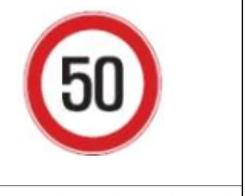

890. Замын хөдөлгөөний тухай хуульд зааснаар дараах аюулгүй байдлын тэмдгийн тайлбараас зөв нь аль вэ?

- ①Заах тэмдэг бөгөөд автомашины дундаж хурд цагт 50 км-ээс хэтэрч болохгүй.
- ②Хориглох тэмдэг бөгөөд автомашины дундаж хурд цагт 50 км-ээс хэтэрч болохгүй.
- ③Заах тэмдэг бөгөөд автомашины хамгийн дээд хурд цагт 50 км-ээс хэтэрч болохгүй.
- ④Хориглох тэмдэг бөгөөд автомашины хамгийн дээд хурд цагт 50 км-ээс хэтэрч болохгүй.
Хариулт харах
Зөв хариулт
④ Хориглох тэмдэг бөгөөд автомашины хамгийн дээд хурд цагт 50 км-ээс хэтэрч болохгүй.
Үндэслэл
Замын хөдөлгөөний тухай хуулийн хэрэгжилтийн дүрэм Хавсралт 6, Зохицуулах тэмдэг 224. Хурдны дээд хязгаарын тэмдэг Автомашины дээд хурд гэх мэтийг тэмдэгт заасан хурдаар тодорхойлно. Суурилуулалтын стандарт, байршлыг тухайн газар нутаг, замын хэсэг, автомашины хурдыг хязгаарлах гэх мэт шаардлагатай цэгийн баруун талд суурилуулна.
Үндэслэлийн текст нь машин орчуулга.